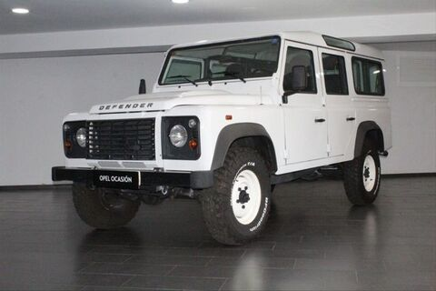

C’est une question qui revient souvent. Puis-je partir avec ma propre voiture. La réponse est oui. Le Raid Paris-Cap Nord est vraiment ouvert à tous les véhicules. Le véhicule idéal n’existe pas mais beaucoup nous ont conseillés quand même d’avoir un véhicule avec une garde au sol correcte.
La liste des véhicules qui ont fait le raid est très longue mais en voici une partie qui nous ont aider dans notre choix de véhicule : R4, Fiat Uno, Citroën 2CV, Renault 11, 206, Renault Trafic, 4L, 203, Berlingo, Polo, Twingo, Xsara Picasso, Lada Niva, Toyota Hilux, Land Rover Defender 110, Peugeot Partner, Renault Laguna, Peugeot 306, Santana, etc…
Allez on vous la montre sans plus attendre !!!

Nos Finances :
Voici le budget prévisionnel de notre projet qui, quoique élevé, a été prévu pour un mois. Les frais occasionnés par la voiture consistent en une partie très importante de l'apport financier auquel nous devrons faire face, l'essence étant à un prix très élevé en Scandinavie.